母の日のバラ。
2022/05/08
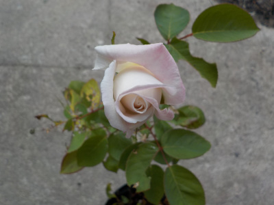
一昨年挿し木したバラがもうちょっとで咲きます。たぶん明日は咲くでしょう。
今の状態でも十分キレイですね。
バラは母の日の見頃になるので、母の日のプレゼントに向いていると思う。
2022/05/08

一昨年挿し木したバラがもうちょっとで咲きます。たぶん明日は咲くでしょう。
今の状態でも十分キレイですね。
バラは母の日の見頃になるので、母の日のプレゼントに向いていると思う。
2021/09/26
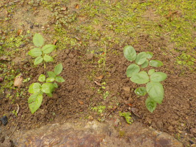
挿し木のバラが少し成長したので庭に2本並べて植えました。
来年の春には花が咲くだろうと思っています。
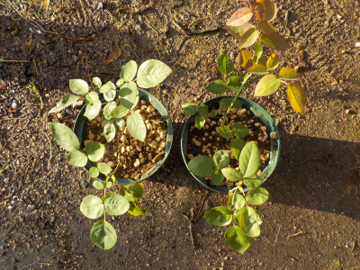
挿し木で増やしたバラがまだあって、大きくなったものを2本ずつ大きな鉢に植えました。
一度に沢山増やすと置場に困りますね。
2021/09/19
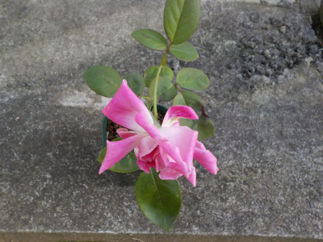
挿し木で増やしたバラで、まだ小さいですが花を咲かせていました。
小さくても花を付けるんですね。
鉢が小さいので、今度大きな鉢に植え替えしようと思います。
2021/05/09
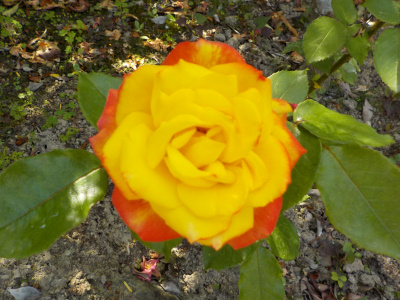
バラが咲きました。
数本あるんですが、それぞれ綺麗に咲いています。
今ぐらいが一番いい時期です。
2021/04/04
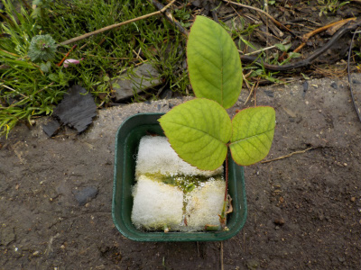
水で浸したウールマットに挿したバラから芽が出ました。
根っこもあったので土に植替えしました。
もうバラは沢山鉢上げしてて必要ないですが、捨てれないので育てます。
2021/03/28
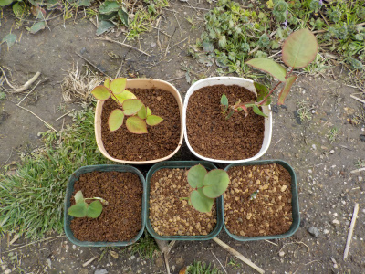
葉っぱが伸びて容器が窮屈になったので鉢上げしました。
一つは葉っぱが出ていないですが、根っこがしっかり出ていたので植えました。
2021/03/21
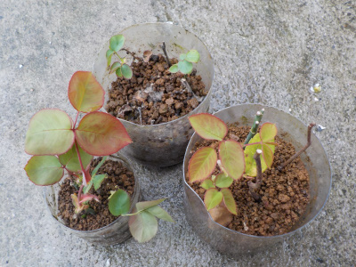
挿木が沢山成功するのはうれしいですね。
植替え用の小さな鉢を準備して植え替えようと思います。
鉢の数がどんどん増えていくな。
2020/08/13
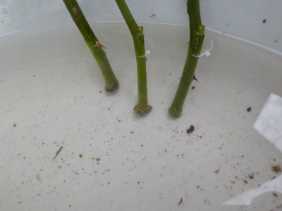
バラの切り口に小さな塊が出来ていました。
ここから根っこが出るんでしょうか。
水挿しですが、ボウフラが発生するのでやめることにしました。
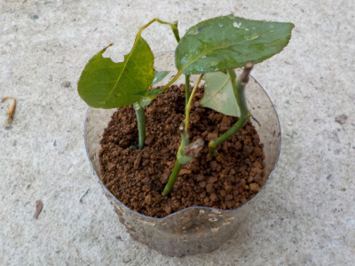
ペットボトルで育てます。
根っこがでるといいな。
2020/07/12
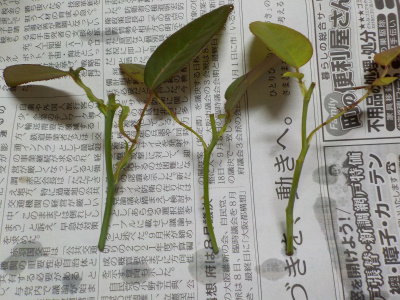
バラの花が終わったら切って捨てるんですけど、捨てずに水に差したら根っこが出ないかな？って思ったのでやってみます。
四季咲きで次々咲き終わったら切り取るので、何度でもやってみます。
挿し木もやってみようかな。
2020/05/04
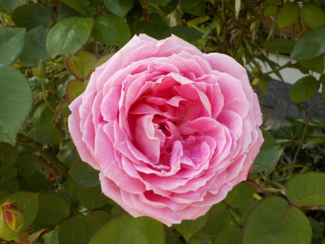
今年も暖冬だったせいか、花が大きいです。
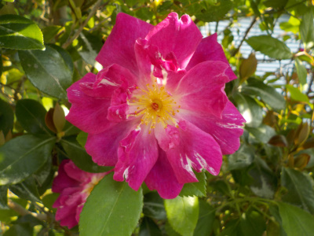
違う種類のバラも咲いていました。
綺麗な花を見ると数を増やしたい、種類を増やしたいって思いますね。
でも沢山種類があるので、どれにしようかと迷って買えずにいます。
買うなら白いバラかな。